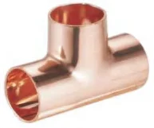
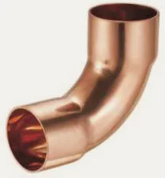
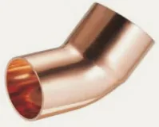
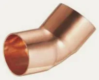
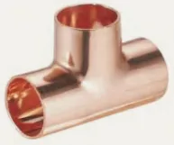
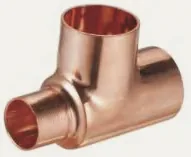
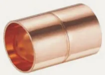
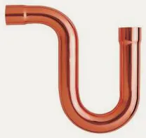

Złączki lutowane Besco
Miedziane złączki kapilarne do lutu miękkiego i twardego: metryczne serie 4000 i 5000 według EN 1254, calowe ANSI B16.22 oraz G-size do wysokich ciśnień.
- Indeksy
- 893
- Średnice
- 6–108 mm
- Producent
- Besco


Komu to sprzedasz i jak.
- Kto kupuje w Twojej hurtowni
- Instalatorzy pracujący w klasycznej technologii, chłodnictwo i klimatyzacja oraz utrzymanie ruchu w przemyśle.
- Argument sprzedażowy
- Jeden dostawca na kształtki metryczne, calowe i G-size do 80 bar, bez dokładania kolejnej marki.
Linie w systemie
Źródło: katalog Besco 2026| Linia | Średnice | Zastosowanie | Parametry | Indeksy | Akcja |
|---|---|---|---|---|---|
 Seria 4000 i 5000, EN 1254 Besco | 6–108 mm | woda, CO, gaz, przemysł | 25 bar DVGW KIWA WRAS | 513 | Indeksy |
 Calowe ANSI B16.22, seria K Besco Calowe ANSI B16.22, seria K Besco | 1/4″–4 1/8″ | woda, CO, gaz, przemysł | 25 bar | 315 | Indeksy |
 G-size do wysokich ciśnień Besco G-size do wysokich ciśnień Besco | 22–76,1 mm | chłodnictwo, przemysł | 20–80 bar · do 150 °C | 65 | Indeksy |
Produkty w systemie
48 grup produktów · rozmiary, numery i opakowaniaMiedź lutowana EN 1254 26 grup · 513 indeksów
 Łuk 90° wz 5001 · 18 rozm.
Łuk 90° wz 5001 · 18 rozm. Łuk 90° ww 5002 · 18 rozm.
Łuk 90° ww 5002 · 18 rozm. Łuk 45° wz 5040 · 17 rozm.
Łuk 45° wz 5040 · 17 rozm. Łuk 45° ww 5041 · 18 rozm.
Łuk 45° ww 5041 · 18 rozm. Kolano 90° ww 5090 · 18 rozm.
Kolano 90° ww 5090 · 18 rozm. Kolano 90° wz 5092 · 18 rozm.
Kolano 90° wz 5092 · 18 rozm. Trójnik równoprzelotowy 5130 · 18 rozm.
Trójnik równoprzelotowy 5130 · 18 rozm. Trójnik redukcyjny 5130 · 113 rozm.
Trójnik redukcyjny 5130 · 113 rozm. Mufa redukcyjna ww 5240 · 54 rozm.
Mufa redukcyjna ww 5240 · 54 rozm. Redukcja wz 5243 · 62 rozm.
Redukcja wz 5243 · 62 rozm. Mufa 5270 · 18 rozm.
Mufa 5270 · 18 rozm. Zaślepka 5301 · 15 rozm.
Zaślepka 5301 · 15 rozm. Łuk 180° powrotny 5060 · 10 rozm.
Łuk 180° powrotny 5060 · 10 rozm. Mijanka ww 5085 · 6 rozm.
Mijanka ww 5085 · 6 rozm. Mijanka wz 5086 · 6 rozm.
Mijanka wz 5086 · 6 rozm. Półśrubunek kątowy 90° 5002G · 6 rozm.
Półśrubunek kątowy 90° 5002G · 6 rozm. Półśrubunek z GW 5359G · 4 rozm.
Półśrubunek z GW 5359G · 4 rozm. Kolano 90° z GW 4090 · 12 rozm.
Kolano 90° z GW 4090 · 12 rozm. Kolano 90° z GZ 4092 · 10 rozm.
Kolano 90° z GZ 4092 · 10 rozm. Śrubunek kątowy 90° z GZ 4098 · 4 rozm.
Śrubunek kątowy 90° z GZ 4098 · 4 rozm. Kolano ścienne z GW 4472 · 8 rozm.
Kolano ścienne z GW 4472 · 8 rozm. Trójnik z GW 4130 · 10 rozm.
Trójnik z GW 4130 · 10 rozm. Złączka z GW 4270 · 19 rozm.
Złączka z GW 4270 · 19 rozm. Złączka z GZ 4243 · 23 rozm.
Złączka z GZ 4243 · 23 rozm. Śrubunek z GW (uszczelnienie stożkowe) 4330G · 4 rozm.
Śrubunek z GW (uszczelnienie stożkowe) 4330G · 4 rozm. Śrubunek z GZ 4331 · 4 rozm.
Śrubunek z GZ 4331 · 4 rozm.Miedź calowa ANSI B16.22 · seria K 13 grup · 315 indeksów
 Łuk 90° wz K5001 · 15 rozm.
Łuk 90° wz K5001 · 15 rozm.
Łuk 90° ww K5002 · 16 rozm.
Łuk 45° wz K5040 · 13 rozm.
Łuk 45° ww K5041 · 14 rozm. Kolano 90° ww K5090 · 14 rozm.
Kolano 90° ww K5090 · 14 rozm. Kolano 90° wz K5092 · 13 rozm.
Kolano 90° wz K5092 · 13 rozm.
Trójnik równoprzelotowy K5130 · 16 rozm.
Trójnik redukcyjny K5130R · 94 rozm.Mufa redukcyjna ww K5240 · 42 rozm. Redukcja wz K5243 · 41 rozm.
Redukcja wz K5243 · 41 rozm.
Mufa K5270 · 16 rozm. Zaślepka K5301 · 14 rozm.
Zaślepka K5301 · 14 rozm.
Syfon P K5096 · 7 rozm.Miedź G-size · chłodnictwo i przemysł 9 grup · 65 indeksów


Co warto wiedzieć.
Odpowiedzi według dokumentacji producenta. Resztę wyjaśni handlowiec.
Zadzwoń: 513 191 502Do jakiego lutowania są te kształtki?
To kształtki kapilarne do lutowania miękkiego i twardego.
Jakie parametry ma seria EN 1254?
Średnice 6–108 mm, do 25 bar, od −20 do 110 °C. Aprobaty DVGW, KIWA i WRAS.
Czym są seria K i G-size?
Seria K to calowe kształtki według ANSI B16.22 w rozmiarach od 1/4″ do 4 1/8″. G-size to kształtki 22–76,1 mm na ciśnienia 20–80 bar i temperatury do 150 °C, do chłodnictwa i przemysłu.
Czy mogę zamówić po numerze artykułu?
Tak. Wszystkie 893 indeksy lutowane Besco znajdziesz w katalogu z wyszukiwarką. Dodaj je do listy i wyślij do wyceny.
Zapytaj o wycenę na złączki lutowane Besco.
Ceny hurtowe, dostępność i terminy dostaw przygotujemy w ciągu jednego dnia roboczego.
Pozostałe systemy
Wszystkie systemy 01 · Besco
01 · BescoZłączki zaprasowane
Gutpress Copper w profilach V i M, linie gazowe, Gutpress Steel, stal nierdzewna INOX i Gutpress Zawory Kulowe V i M.
1 583 indeksy · 12–168,3 mm Zobacz → 02 · Pegler Yorkshire
02 · Pegler YorkshireZłączki na wcisk
Tectite Classic, Pro, 316 i Carbon oraz zawory na wcisk. Montaż bez narzędzi i ognia.
ok. 530 indeksów · 10–54 mm Zobacz → 03 · Pegler Yorkshire
03 · Pegler YorkshireZłączki skręcane
Kuterlite K600 i K900 Pro do miedzi, K700 do rur PE oraz zawory z końcówkami zaciskowymi.
ok. 470 indeksów · 6–54 mm Zobacz →